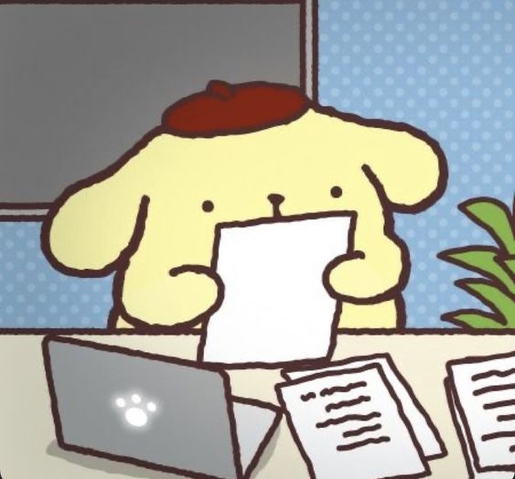

Mi novio y yo estudiamos la misma carrera, y somos un equipo chambeador de programadores c:
Cuando dos programadores trabajan juntos, la colaboración se fortalece, permitiendo resolver problemas de manera más eficiente y encontrar soluciones más robustas.
Razones por las que él se encarga del Backend:
Razones por las que me encargo del Frontend: